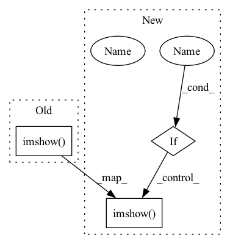

Pattern ID :9453
Before Change
if kwargs.get("read_raw", False):
image = cv2.cvtColor(image, cv2.COLOR_RGB2BGR) // convert back to BGR
cv2.imshow( "image", image)
cv2.waitKey(0)
cv2.destroyWindow("image")
if get_viz_backend() == "matplotlib":After Change
notebook = True
except NameError:
pass
if notebook :
// If the input content is not a figure, then we can display it.
if kwargs.get("matplotlib_figure", True):
return
else:
if kwargs.get("read_raw", False):
image = cv2.cvtColor(image, cv2.COLOR_RGB2BGR) // convert back to BGR
cv2.imshow( "image", image)
cv2.waitKey(0)
cv2.destroyWindow("image")
return
In pattern: SUPERPATTERN
Frequency: 4
Non-data size: 3
Instances Fragment ID: 33798594
Project Name: project-agml/agml
Commit Name: 6e9f87c53dd9f52e4642cfb2de47d231ced66d6a
Time: 2023-05-17
Author: joshi.amoghn@gmail.com
File Name: agml/viz/display.py
M Class Name: AnonimousClass
N Class Name: AnonimousClass
M Method Name: display_image(1)
N Method Name: display_image(1)
M Parent Class:
N Parent Class:
M File Name: agml/viz/display.py
N File Name: agml/viz/display.py
M Start Line: 37
M End Line: 49
N Start Line: 39
N End Line: 64
Before Change
Rotates map counter-clockwise and then crops a dimensions-sized part from the middle.
Map needs padding so that a circle with diameter of the diagonal of the img_size rectangle is enclosed in map.
cv2.imshow( "padded", map)
cv2.waitKey(1)
assert map.shape[0:2] == padded_map_size(dimensions)
cx, cy = tuple(np.array(map.shape[0:2]) / 2)
degrees = math.degrees(radians)After Change
r = cv2.getRotationMatrix2D((cx, cy), degrees, 1.0)
map_rotated = cv2.warpAffine(map, r, map.shape[1::-1])
map_cropped = crop_center(map_rotated, dimensions)
if visualize :
cv2.imshow( "padded", map)
cv2.waitKey(1)
cv2.imshow("rotated", map_rotated)
cv2.waitKey(1)
cv2.imshow("cropped", map_cropped) Fragment ID: 33798597
Project Name: hmakelin/gisnav
Commit Name: 2a9abe23fe9e4612b9c59670fa07e9ef9c4b46d4
Time: 2021-11-23
Author: hmakelin@protonmail.com
File Name: wms_map_matching/util.py
M Class Name: AnonimousClass
N Class Name: AnonimousClass
M Method Name: rotate_and_crop_map(4)
N Method Name: rotate_and_crop_map(3)
M Parent Class:
N Parent Class:
M File Name: wms_map_matching/util.py
N File Name: wms_map_matching/util.py
M Start Line: 257
M End Line: 268
N Start Line: 239
N End Line: 256
Before Change
print(">>>> Prediction:", tf.keras.applications.imagenet_utils.decode_predictions(preds)[0])
print(">>>> Top 5 prediction indexes:", np.argsort(preds[0])[-5:])
fig = plt.figure()
plt.imshow( superimposed_img)
plt.axis("off")
plt.tight_layout()
return superimposed_img, heatmap, preds
After Change
if model.output_shape[-1] == 1000:
print(">>>> Prediction:", tf.keras.applications.imagenet_utils.decode_predictions(preds)[0])
print(">>>> Top 5 prediction indexes:", np.argsort(preds[0])[-5:])
if plot :
fig = plt.figure()
plt.imshow( superimposed_img)
plt.axis("off")
plt.tight_layout()
return superimposed_img, heatmap, preds
Fragment ID: 33798587
Project Name: leondgarse/keras_cv_attention_models
Commit Name: 047bc7bb8b5a4c02a9cc6ac08b08cae72c7da9f3
Time: 2022-01-02
Author: leondgarse@gmail.com
File Name: keras_cv_attention_models/visualizing/visualizing.py
M Class Name: AnonimousClass
N Class Name: AnonimousClass
M Method Name: make_and_apply_gradcam_heatmap(7)
N Method Name: make_and_apply_gradcam_heatmap(6)
M Parent Class:
N Parent Class:
M File Name: keras_cv_attention_models/visualizing/visualizing.py
N File Name: keras_cv_attention_models/visualizing/visualizing.py
M Start Line: 175
M End Line: 180
N Start Line: 154
N End Line: 183
Before Change
img = visualize_bbox(img, bbox, class_name)
plt.figure(figsize=(12, 12))
plt.axis("off")
plt.imshow( img)
plt.show()
def denorm(x, mean=(0.485, 0.456, 0.406), std=(0.229, 0.224, 0.225)):
mean = torch.tensor(mean).view(-1, 1, 1)After Change
for bbox, category_id in zip(bboxes, category_ids):
class_name = category_id_to_name[category_id]
img = visualize_bbox(img, bbox, class_name, color)
if show :
plt.figure(figsize=(12, 12))
plt.axis("off")
plt.imshow( img)
plt.show()
return img
def denorm(x, mean=(0.485, 0.456, 0.406), std=(0.229, 0.224, 0.225)): Fragment ID: 33798585
Project Name: moein-shariatnia/pix2seq
Commit Name: 03d95e9f7df56222648ed0303013f0646ef37ff6
Time: 2022-08-18
Author: moein.shariatnia@gmail.com
File Name: visualize.py
M Class Name: AnonimousClass
N Class Name: AnonimousClass
M Method Name: visualize(6)
N Method Name: visualize(4)
M Parent Class:
N Parent Class:
M File Name: visualize.py
N File Name: visualize.py
M Start Line: 38
M End Line: 41
N Start Line: 34
N End Line: 44